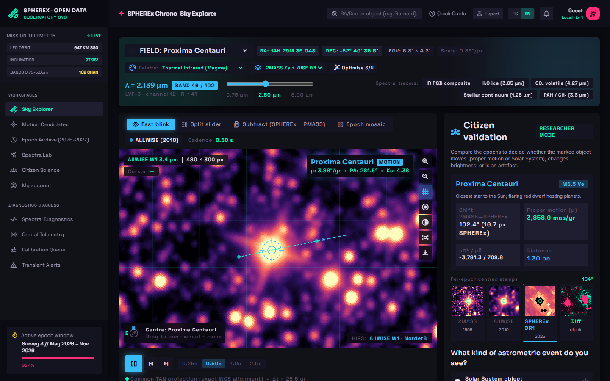
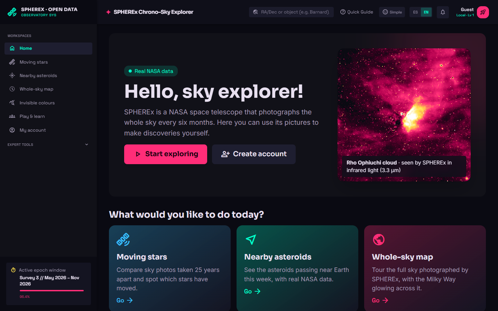
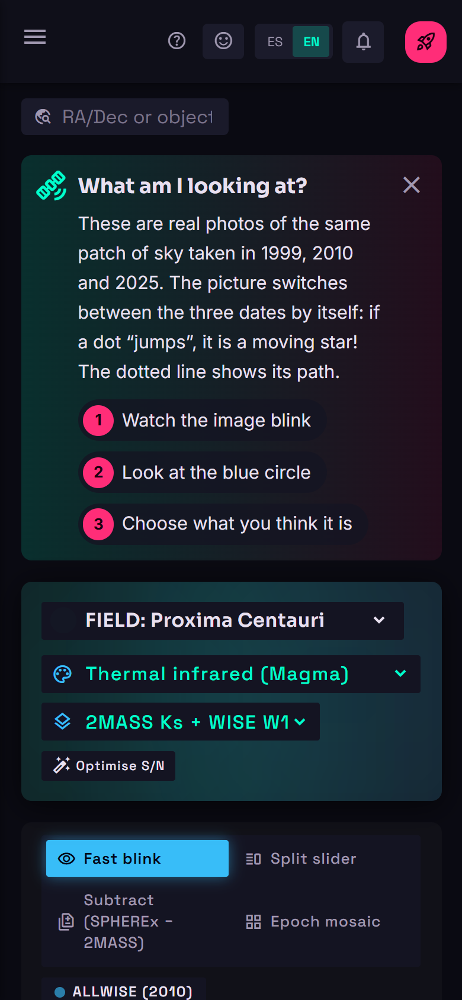
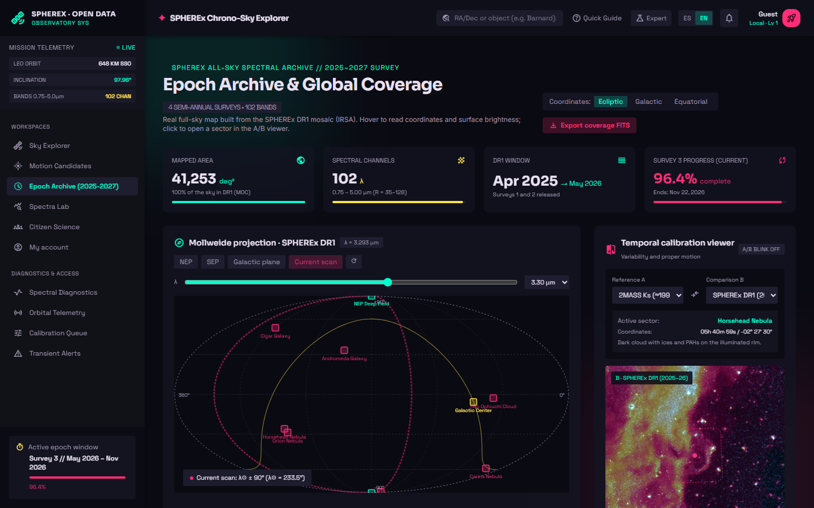
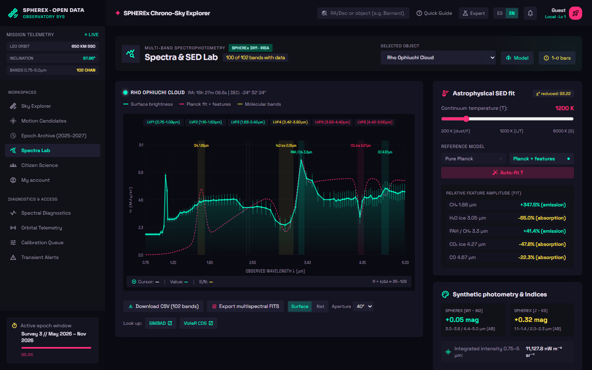

SPHEREx
Chrono-Sky
Explorer
See the sky move — with real NASA infrared data, for anyone of any age.
Esmeralda Elizabeth Guevara Ponce · Adrián Josué Martínez López

A billion objects, a new sky map every six months —
too much for any one person to check.
infrared colours
SPHEREx (launched March 2025) maps the whole sky in 0.75–5 µm light.
between full-sky maps
Stars, brown dwarfs and asteroids reveal themselves by shifting position between images.
Our answer
- 1
A free public web tool that shows SPHEREx images next to older surveys so changes jump out.
- 2
Anyone can spot, vote on and save moving-object candidates.
- 3
A Simple mode for all ages and an Expert mode with exports for scientists — in English and Spanish.
26 years of sky,
one blink.
- ✓
Real tiles from NASA/IPAC IRSA, re-projected in the browser onto the same pixel grid.
- ✓
Blink, split slider, difference and mosaic views make motion obvious.
- ✓
Pick any of the 102 SPHEREx channels; export everything as FITS.


Built for every age.
- ☺
Simple mode: big text, plain words, step-by-step help boxes.
- ⚗
Expert mode: coordinates, photometry, FITS/CSV, keyboard shortcuts.
- ▤
Works on phones (pinch to zoom) and desktops.
- ⇄
English / Español with one tap.
- ★
Free accounts save points, votes and quiz progress.
From this week's asteroids to the whole sky.
Motion Candidates — near-Earth asteroids from NASA NeoWs plus the fastest-moving stars and brown dwarfs. Vote real or artefact; orbits computed live.

Epoch Archive — the real SPHEREx all-sky map at any of 102 wavelengths, with the Milky Way, ecliptic and today's scan path.

What is it made of?
Click any point of the sky and get its 102-channel SPHEREx spectrum (0.75–5 µm).
- ✓
Fit a temperature curve plus water ice, CO₂ ice, CO and PAH features.
- ✓
Kids see “invisible colours”; scientists download CSV and FITS.
- ✓
Diagnostics flag saturated or empty channels so results stay honest.
100% open data.
NASA / IPAC IRSA
SPHEREx DR1 spectral cube & all-sky map · 2MASS · AllWISE
api.nasa.gov
NeoWs near-Earth objects · DONKI space weather · Image & Video Library
NASA Earthdata & CelesTrak
GIBS Earth maps · live SPHEREx orbit (NORAD 63182)
Looking ahead.
- →
Add every new SPHEREx survey as it is released: more epochs, sharper motion.
- →
Turn community votes into a ranked list of new brown-dwarf and asteroid candidates for follow-up.
- →
Classroom missions so students in El Salvador and worldwide join real discovery.